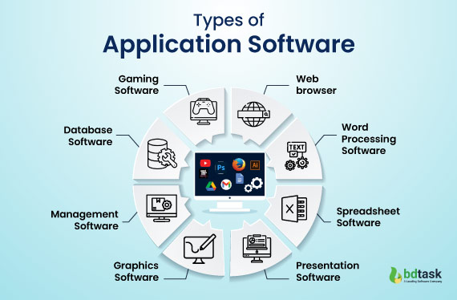

Aplikační software
Aplikace jsou uživatelské programy určené pro jeden nebo více specifických účelů. Pro spouštění aplikací je nezbytná přítomnost základního softwaru – operačního systému.
Základní skupiny aplikací
Kancelářské balíky
Symbolický „balík“ programů obvykle tvoří textový procesor, tabulkový procesor, nástroj na tvorbu prezentací, databázový systém, a někdy i groupwarové nástroje (systémy organizování času, zajišťování schůzek), grafické editory apod. Vedle komerčních balíků, jako jsou Microsoft Office či Apple iWork, existují také bezplatné alternativy, například OpenOffice nebo WPS Office, které jsou dostupné pro různé platformy.
Grafické aplikace
Oblast grafiky je velmi rozsáhlá; grafické programy umožňují vytvoření grafických dokumentů přímo v počítači, skenování papírových předloh a zachycení obrazu digitálním fotoaparátem. Dominantní postavení v této oblasti má profesionální software společnosti Adobe (například Adobe Photoshop nebo Adobe Illustrator). Mezi populární multiplatformní open-source grafické aplikace patří například rastrový editor GIMP nebo vektorový editor Inkscape. Samostatné oblasti počítačové grafiky tvoří programy pro tvorbu animací, rozsáhlé konstrukční systémy CAD (Computer-Aided Design) a programy DTP (Desktop Publishing) určené pro tvorbu tiskovin.
Programy pro komunikaci v počítačové síti
Tyto programy slouží ke správě počítačových sítí, vzdálenému řízení počítače, přenosu a přístupu ke vzdáleným souborům, vzdálenému tisku či připojení vnitřní podnikové sítě (intranet) na síť celosvětovou (Internet) prostřednictvím poskytovatele internetu. Mezi základní uživatelské aplikace patří webové prohlížeče, klienti elektronické pošty, groupware (software pro týmovou spolupráci) a nástroje pro online komunikaci, jako je IM (Instant Messaging).
Informační a databázové systémy
Informační systémy (IS – Information Systems) představují komplexní programové vybavení určené pro instituce nebo firmy. Základem těchto systémů bývají tzv. datové sklady (data warehouse), které jsou založeny na databázových systémech. Podnikové informační systémy, označované zkratkou ERP (Enterprise Resource Planning), obsahují řadu modulů, například pro výrobu, logistiku, správu majetku či účetnictví. Mezi lídry v oblasti informačních a databázových systémů patří firmy jako Oracle, Microsoft, IBM a SAP. Kromě komplexních IS existují specializované aplikace podporující výrobní procesy, ekonomické transakce a další pracovní činnosti.
Multimediální programy
Tyto aplikace umožňují vytváření, zpracování a prezentaci multimediálních dat (zejména audiovizuálních) na počítači. Do této skupiny patří multimediální přehrávače, programy pro editaci digitálního zvuku nebo videa, nástroje pro tvorbu multimediálních prezentací, výukové programy a také široká oblast počítačových her.
Malware a antivirové programy
Malware je počítačový program určený k narušení nebo poškození počítačového systému. Naproti tomu antivirové programy (například AVG, AVAST, ESET nebo Kaspersky Antivirus) chrání počítačové systémy před tímto škodlivým softwarem.
Integrovaná vývojová prostředí
Tato prostředí, často označovaná zkratkou IDE (Integrated Development Environment), jsou využívána programátory pro vývoj aplikací. Tradičně obsahují editor s pomůckami pro psaní programového kódu, ladicí nástroje, překladače a další nástroje, které zefektivňují práci vývojářů.
